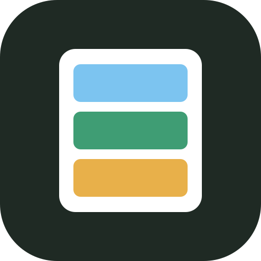

Innlogget som
Laster …
Sorter etter
Ingen varer her ennå.
Ønsker
Porsjoner
Har alltid
Endre
Disse regnes aldri som «Mangler». Trykk på en for å fjerne den.
Ingrediensene under trekkes fra lageret ditt. Ta bort haken på det du ikke brukte, og juster hvor mye som er igjen. Står det 0, fjernes varen.
Ingen av ingrediensene ligger i lageret ditt.